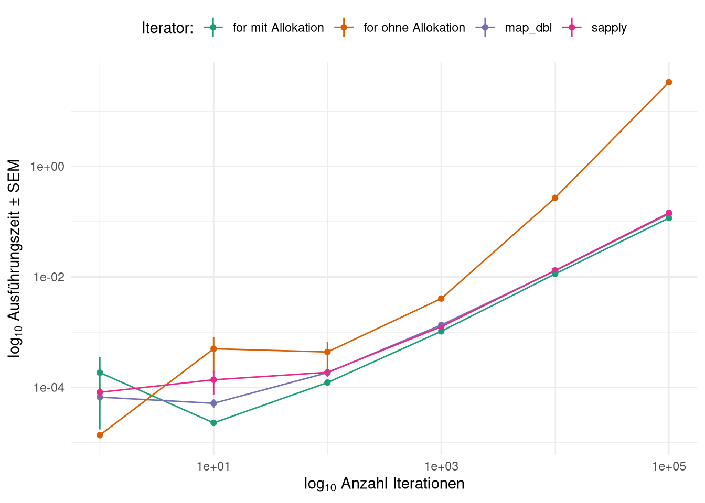

Functionals
Wie wir am Anfang des Semesters bei der Definition unserer eigenen Funktionen ja schon gemerkt haben, sind Funktionen in R von der Struktur her gar nicht so verschieden zu anderen Objekten wie zum Beispiel Datensätzen oder Vektoren.
Sowohl die einen, wie auch die anderen, werden als Namen mit entsprechenden Inhalten im Environment angelegt, wobei aber natürlich bei Datensätzen die Daten damit gemeint sind und bei Funktionen Environment-Verweis, Body und Formals angelegt werden.
Das heißt für R aber auch, dass so genannte Functionals genutzt werden. Diese Gruppe von Funktionen sind solche, die andere Funktionen als Argumente und diese anwenden können. Beispiele für solche Funktionen haben wir auch schon kennen gelernt, die vielleicht aus dem Kapitel zur Aggregation von Daten in EDV1 bekannte across-Funktion ist ein solcher Fall:
iris %>%
group_by(Species) %>%
summarise(across(where(is.numeric),
.fns = list(m = mean, s = sd),
.names = '{.fn}_{.col}'))## # A tibble: 3 × 9
## Species m_Sepal.Length s_Sepal.Length m_Sepal.Width s_Sepal.Width
## <fct> <dbl> <dbl> <dbl> <dbl>
## 1 setosa 5.01 0.352 3.43 0.379
## 2 versicolor 5.94 0.516 2.77 0.314
## 3 virginica 6.59 0.636 2.97 0.322
## # … with 4 more variables: m_Petal.Length <dbl>, s_Petal.Length <dbl>,
## # m_Petal.Width <dbl>, s_Petal.Width <dbl>Hier übergeben wir dem .fns-Argument eine Liste mit Funktionen, die dann auf alle numerischen Spalten des Datensatzes angewandt werden.
Ein anderes, sehr für R typisches Beispiel von Functionals sind sapply, lapply und mapply. Alle drei Funktionen nehmen als Input eins oder mehrere Objekte und eine Funktion, die auf jeden Eintrag de(s/r) übergebenen Objekte(s) angewandt werden soll.
Exemplarisch gucken wir uns sapply an, die Listen5 als erstes Argument erwarten.
Als Objekt nehmen wir iris (was ja wie wir gelernt habe eine aufgemotzte Liste ist) und lassen uns mit sapply für jede Spalte sagen, ob sie numerisch ist:
sapply(iris, is.numeric)## Sepal.Length Sepal.Width Petal.Length Petal.Width Species
## TRUE TRUE TRUE TRUE FALSEFällt Dir was auf?
Wir haben gerade eine Funktion fünf mal ausgeführt, ohne ihr explizit ein Argument zu übergeben. Den (is.numeric(iris$Sepal.Width),is.numeric(iris$Sepal.Length), etc., etc., …)-Teil hat uns sapply abgenommen. sapply ist sogar so weit gegangen, uns die Ergebnisse in einem praktischen Vektor wiederzugeben, hat also irgendwie einen Output für uns erstellt.
Diesen Vektor könnten wir jetzt als Index nutzen, um uns nur die numerischen Spalten ausgeben zu lassen und uns wieder mit sapply die Mittelwerte ausrechnen zu lassen:
sapply(iris[,which(sapply(iris, is.numeric))],
mean)## Sepal.Length Sepal.Width Petal.Length Petal.Width
## 5.843333 3.057333 3.758000 1.199333Die sapply-Funktion macht also im Prinzip nicht viel anderes, als unsere for-Schleifen.
Aufgabe
Baue die oben mit sapply implementierte Mittlung mit for-Schleifen nach.
Dabei soll erst überprüft werden, ob eine Spalte numerische Inhalte hat, wenn dem so ist soll der Mittelwert dieser Spalte berechnet werden.
Verpacke deine Lösung in eine Funktion, die den spaltenweisen Mittelwert zurückgibt.
Überlege dir insbesondere, ob Du den Output-Vektor allozieren kannst und was ein sinnvolles Format dafür wäre.
Antwort
my_col_mean <- function(df){
out <- rep(NA, ncol(df))
names(out) <- names(df)
for(col in names(df)){
if(is.numeric(df[[col]])){
out[col] <- mean(df[[col]])
}
}
return(out)
}
my_col_mean(iris)## Sepal.Length Sepal.Width Petal.Length Petal.Width Species
## 5.843333 3.057333 3.758000 1.199333 NApurrr::map
Eine Alternative zu den *apply-Funktionen ist die map-Familie aus dem purrr-Paket. Im Prinzip sind die identisch zu den *apply-Funktionen, der große Unterschied ist, dass sie spezialisierter sind als erstere.
Diese Eigenschaft ist auch der einzige wirkliche Grund dafür, die functional-Iteratoren den Schleifen vorzuziehen. Code, der so spezifisch für ein Problem wie möglich ist, ist einfach schöner weil schneller verständlich.
Die grundlegende Funktion aus der map-Familie ist das einfache map, das lapply-Analogon. map nimmt also eine Liste oder einen Vektor und eine Funktion als Input und gibt eine Liste zurück:
map(1:10, sqrt)## [[1]]
## [1] 1
##
## [[2]]
## [1] 1.414214
##
## [[3]]
## [1] 1.732051
##
## [[4]]
## [1] 2
##
## [[5]]
## [1] 2.236068
##
## [[6]]
## [1] 2.44949
##
## [[7]]
## [1] 2.645751
##
## [[8]]
## [1] 2.828427
##
## [[9]]
## [1] 3
##
## [[10]]
## [1] 3.162278Alternativ kann mit der sogenannten Funktionsschreibweise auch ein Ausdruck formuliert werden, der für jeden iterierten Wert ausgeführt werden soll:
map_dbl(1:10, ~sqrt(.))## [1] 1.000000 1.414214 1.732051 2.000000 2.236068 2.449490 2.645751 2.828427
## [9] 3.000000 3.162278Der besondere Vorteil dieser Funktionen gegenüber den *apply-Funktionen, ist die Gruppe von Funktionen, die klar lesbar den erwarteten Output einer Iteration definieren.
Beispielsweise kann mit map_dbl, map_lgl und map_chr klar festgelegt werden, dass 1. ein atomic-Vektor ausgegeben wird, der 2. einen klaren Datentyp hat:
map_dbl(1:10, ~.^2)## [1] 1 4 9 16 25 36 49 64 81 100map_lgl(1:10, ~.%%2==0)## [1] FALSE TRUE FALSE TRUE FALSE TRUE FALSE TRUE FALSE TRUEmap_chr(1:10, ~letters[.])## [1] "a" "b" "c" "d" "e" "f" "g" "h" "i" "j"Und, noch praktischer, auch für komplexere Datentypen gibt es Wrapper. So können wir zum Beispiel mit map_dfr und map_dfc tibbles erzeugen lassen, die dann aus zeilenweise (dfr für rows) und spaltenweise (dfc für columns) zusammengefügten Ergebnissen bestehen:
map_dfr(1:10, ~tibble(i = .,
x = sample(1:10,1)))## # A tibble: 10 × 2
## i x
## <int> <int>
## 1 1 10
## 2 2 7
## 3 3 3
## 4 4 5
## 5 5 3
## 6 6 7
## 7 7 5
## 8 8 10
## 9 9 1
## 10 10 3map_dfc(1:10, ~c(sample(.:(.+10),1)))## New names:
## * NA -> ...1
## * NA -> ...2
## * NA -> ...3
## * NA -> ...4
## * NA -> ...5
## * ...## # A tibble: 1 × 10
## ...1 ...2 ...3 ...4 ...5 ...6 ...7 ...8 ...9 ...10
## <int> <int> <int> <int> <int> <int> <int> <int> <int> <int>
## 1 5 8 3 4 15 9 11 15 13 10Exkurs: Iteratoren-Vergleich
Man liest manchmal, dass loops in R wegen geringerer Geschwindigkeit in jedem Fall vermieden werden sollten. Das stimmt aber nicht wirklich, wenn man für seine for-Schleifen alloziert.
Um das zu zeigen vergleichen wir mit der folgenden Funktion for ohne Allokation, for mit Allokation, sapply und map_dbl:
my_function <- function(x) x^2
my_test <- function(i){
out <- list()
out[['len']] <- 10^(i%%6)
to_do <- 1:out[['len']]
start <- Sys.time()
res <- c()
for(j in to_do){
res <- c(res, my_function(j))
}
out[['for ohne Allokation']] <- Sys.time() - start
start <- Sys.time()
res <- numeric(length(to_do))
for(j in to_do){
res[j] <- my_function(j)
}
out[['for mit Allokation']] <- Sys.time() - start
start <- Sys.time()
res <- sapply(to_do, my_function)
out[['sapply']] <- Sys.time() - start
start <- Sys.time()
res <- map_dbl(to_do, my_function)
out[['map_dbl']] <- Sys.time() - start
return(out)
}Aufgabe
Was passiert hier?
Antwort
my_function <- function(x) x^2 # Funktion zum Quadrieren
my_test <- function(i){
out <- list() # initiiere leere output-Liste
out[['len']] <- 10^(i%%6) # Berechne Länge der Iteration als
# 10-Potenz zwischen 0 und 5
to_do <- 1:out[['len']] # durch zu iterierender Vektor
start <- Sys.time() # Startzeit erster Test
res <- c() # initiiere leeren Vektor (keine Allokation)
for(j in to_do){ # iteriere duch to_do
res <- c(res, my_function(j)) #quadriere jede Zahl und
# vergrößere res mit jeder Iteration
}
out[['for ohne Allokation']] <- Sys.time() - start # berechne Zeit-delta
start <- Sys.time() # Startzeit zweiter Test
res <- numeric(length(to_do))# initiiere Vektor mit Allokation
for(j in to_do){# iteriere durch to_do
res[j] <- my_function(j) #quadriere jede Zahl und lege in res ab
}
out[['for mit Allokation']] <- Sys.time() - start # berechne Zeit-delta
start <- Sys.time() # Startzeit dritter Test
res <- sapply(to_do, my_function) # quadriere jede Zahl und speicher output
out[['sapply']] <- Sys.time() - start # berechne Zeit-delta
start <- Sys.time() # Startzeit vierter Test
res <- map_dbl(to_do, my_function) # quadriere jede Zahl und speicher output
out[['map_dbl']] <- Sys.time() - start # berechne Zeit-delta
return(out)
}Diesen Test lassen wir 60 mal laufen, um ein paar Datenpunkte pro Länge und Iterator zu bekommen:
library(furrr)
plan(multisession)
out <- future_map_dfr(1:60, ~my_test(.))
write_rds(out,'data/iterators.rds')## `summarise()` has grouped output by 'len'. You can override using the `.groups` argument.
oder Vektoren↩︎